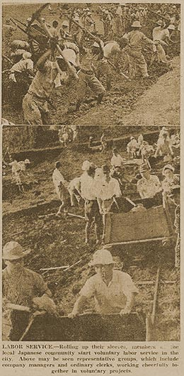

|
j
a v a s c r i p t |
March 9, 1944

Meanwhile, Cheerful Voluntary
Laborers await their turn. La Vanguardia: "More blows dealt to the enemy" — but the blows were by the Americans. The Japanese "repulsed" them at Bougainville, Rangoon, Rabaul, Wotje, Taroa and Kei!† At the Dawn of Freedom movie yesterday, Poe is asked why he wouldn't reveal the disposition and number of his troops at Bataan. When he replied, "Because it is a procedure contrary to my oath of allegiance to the United States of America..." the crowd burst into applause then giggled at its own effrontery. News: The USAF second heavy daylight raid over Berlin in three days set some kind of record: 10,000 conventional and 350,000 incendiary bombs; 2,000 bombers and long-range fighters battled against fierce German opposition. German propaganda has some explaining to do — and Tokyo residents have some worrying to do. † Kei Archipelago is east of Timor. |
|
|
|
|